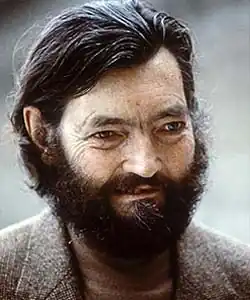
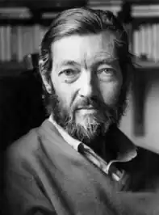
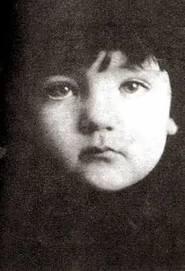

КОРТАСАР, Xyлio (Cortazar, Julio — 26.08.1914, Брюссель — 12.07.1984, Париж) — аргентинський письменник.Народився у Брюсселі в родині дипломата, батьки за національністю — аргентинці. У 1916 р. після окупації Брюсселя німецькими військами родина переїхала у Швейцарію, де залишалася до кінця Першої світової війни, а в 1918 р. повернулася в Аргентину. Дитинство Кортасара проминуло у Банфілді, приміській зоні Буенос-Айреса. Батько покинув сім'ю. Хуліо жив із матір'ю, тіткою та молодшою сестрою Офелією, часто хворів, згодом у нього розвинулася астма. У 1928 p. Кортасар вступив у педагогічне училище, а в 1932 р. отримав диплом викладача середньої школи. Тоді ж під враженням книги Ж. Кокто "Опій" відкрив для себе світ сюрреалізму. У 1935 p. Кортасар вступив на факультет філософії та філології столичного університету, але через рік залишив навчання через брак коштів. Наприкінці 30-х pp. працював шкільним учителем у Боліварі — містечку у провінції Буенос-Айрес, захопився джазовою музикою, писав оповідання, які ніде не публікував, а з 1944 р. викладав французьку літературу в університеті м. Куйо.
У 1946 p. Кортасар повернувся у Буенос-Айрес, де влаштувався в Аргентинську книжкову палату. У 1948 р. екстерном за дев'ять місяців закінчив трирічні курси перекладачів з англійської та французької мов, а в 1951 p., отримавши стипендію французького уряду, поїхав у Париж з наміром залишитись у Європі. Працював перекладачем у ЮНЕСКО. У 50-х pp. у справах ЮНЕСКО багато подорожував: Італія (1954), Куба (1961), Аргентина, Перу, Еквадор, Чилі (1970—1973). У 1974 р. брав участь у роботі "трибуналу Рассела" (засідання в Римі, присвячене порушенню прав людини в країнах Латинської Америки). У 1975 р. здійснив поїздку у США та Мексику, де читав лекції про латиноамериканську літературу та про власну творчість, брав участь у роботі Міжнародної комісії з вивчення злочинів воєнної хунти в Чилі. У 1976 p. Кортасар таємно поїхав у Нікарагуа, де після скасування конституції почалися масові політичні репресії. У1981 р. Кортасар отримав французьке підданство. У тому ж році лікарі виявили у письменника лейкемію. У 1983—1984 pp. K. здійснив ще ряд поїздок країнами Латинської Америки (Куба, Аргентина, Нікарагуа), а 12 липня 1984 р. він помер.
Хоча перші літературні спроби Кортасара припадають ще на його отроцтво, до середини 30-х років занадто вимогливий письменник не зважувався на публікацію своїх творів. Його перша поетична збірка "Присутність" ("Fresencia") вийшла друком у 1938 p.. Більш вдалим виявився прозовий дебют, який відбувся у 1946 р. Ним стала публікація у періодиці оповідання "Захоплений будинок", написаного в дусі "магічного реалізму" і схваленого X. Л. Борхесом. Першою книгою Кортасара стала драматична поема у прозі "Королі" ("Los reyes", 1949). "Королі" були вільною інтерпретацією давньогрецького міфу про боротьбу Тесея з Мінотавром. Фантастична стихія, химерно поєднана з реальністю, яка, в свою чергу, поєднує соціально-критичні мотиви та філософську узагальненість притчі, домінує і в наступних творах Кортасара — збірках оповідань "Бестіарій" ("Bestiario", 1951), "Кінець гри" ("Final de Juego", 1956), "Таємна зброя" ("Las armas secretas", 1959), "Усі вогні — це вогонь" ("Todos los fuegos el fuego", 1966), "Хтось там ходить... " ("Alguien anda por ahi", 1977), "Якийсь Лукас"("Untal Lucas", 1979) таін. До своїх найзначніших досягнень у жанрі малої прози сам Кортасар відносив цикл жартівливих казок-притч "Історія хронопів і слав" ("Historias de Cronopios у de Famas", 1962). Хронопи, слави, а ще — фами і надійки — це вигадані фантастичні істоти, які уособлюють певні людські типи та суспільні верстви. їхній фізичний вигляд письменник майже не конкретизує: хронопи означені як "зелені, настовбурчені і вологі" істотки, а надійки асоційовані із мікробами-світлячками. Зате їхні суспільні функції та соціальний статус цілком означений: усі вони мешкають у Буенос-Айресі, у реальному людському середовищі, взаємодіють з ним і між собою. Фами — це ті, хто займають керівні посади і дбають про свою репутацію; вони самовпевнені та практичні. Надійки — безпорадні, не пристосовані до життя істоти, байдужі до всього, що їх особисто не стосується. Симпатії автора цілком на боці хронопів, які уособлюють дон-кіхотівський тип людського характеру. Вони — мрійники і романтики, внутрішньо розкуті особистості, які часто перебувають у конфлікті із середовищем. Паралельно з малою прозою з кінця 50-х pp. Кортасар звернувся і до жанру роману. Уже перший з них — "Виграші" ("Los pvemios", 1960) приніс йому неабиякий успіх. Герої роману — пасажири пароплава "Малькоґольм". Тут зібралися люди різноманітних професій, різного віку і різного соціального статусу, які у сукупності представляють зріз аргентинського суспільства. На пароплаві панує таємнича атмосфера, а згодом встановлюється карантин, нібито через захворювання членів екіпажу тифом. Пасажири ж притримуються іншої думки, а саме: корабель використовується для перевезення якогось контрабандного вантажу. Група пасажирів влаштовує "заколот", повідомляє про все "велику землю", але поліція, яка прибула невдовзі, перейшла на бік екіпажу. Що насправді відбувалося на пароплаві, так і залишається таємницею. Критика схильна була вбачати у безцільному плаванні "Малькґольма", в абсурдності порядків, встановлених на кораблі, у відчайдушних спробах героїчних одинаків чинити спротив відчуженій і знеособленій атмосфері існування алегоричний образ Аргентини 50-х років, пригнічуваної диктаторським режимом. Навизначнішим твором Кортасара, що здобув йому світове визнання, став роман "Гра у класики" ("Rayuela", 1963). Роман побудований у підкреслено авангардистській манері. Він складається з двох відносно автономних частин. Перша частина може бути прочитана у звичайний спосіб, тобто шляхом лінійного руху від попереднього розділу до наступного, включаючи і додаткову частину, яка в цілому не є обов'язковою для прочитання і яку читач може проігнорувати. Але найкраще, за авторським задумом, читати роман, рухаючись своєрідними зигзагами, на зразок того, як це роблять діти, граючись у "класики". З цією метою Кортасар розробив для читача спеціальний цифровий код — маршрут почерговості прочитання розділів його книги. У центрі зображення обов'язкової для прочитання частини роману — доля сорокарічного аргентинця Орасіо Олівейри, котрий мешкав спочатку у Парижі, а потім — у Буенос-Айресі й є своєрідним інтелектуальним "хіпі". Роман "Гра в класики" був розцінений критикою як "перший видатний латиноамериканський роман". У руслі визначеної романом "Гра в класики" проблематики, пов'язаної з пошуком світоглядних засад нової, духовно відродженої людини, були написані й подальші романи Кортасара, пронизані духом авангардистського експериментаторства: "Навколо дня на 80 світах" ("La vueta al dia en 80 mundos", 1967), "Модель 62 для збирання" ("62 — Modelo para armar", 1968), "Останній раунд" ("El ultimo round", 1970), "Книга для Мануеля" ("Libro de Manuel", 1973); збірки оповідань "Памеос і меопас" (1971), "Восьмигранник" (";Octaedro", 1974), "Хтось поряд з нами" ("Alguienandaporahi", 1977), "Ми так любимо Гленду" ("Qurernos tanto a Glenda", 1980), "Поза часом"("Deshoras", 1982), "Вибрані оповідання" (1985), поетична збірка " Тільки сутінки"(1984), книги нарисів "Нікарагуа: безжально ніжний край" (1983), "Аргентина за колючим дротом" (1984). Після смерті Кортасара у 1986 р. були опубліковані ще два романи Кортасара "Дивертисмент" ("Divertimento") та "Іспит" ("El Examen"). Українською мовою окремі твори Кортасара переклали Ю. Покальчук, А. Перепада, О. Буценко, С. Борщевський, В. Бургардт. В. Назарець